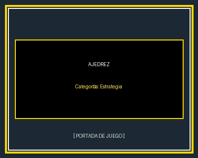
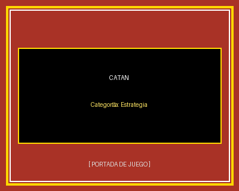

Ajedrez
El juego milenario de estrategia por excelencia. Dos jugadores compiten moviendo sus piezas sobre un tablero cuadriculado de 64 casillas con el objetivo de acorralar y dar jaque mate al rey contrario.
Descargar Reglamento (.pdf)Portal de Reseñas y Reglamentos de Juegos de Mesa
Selección de títulos orientados a la táctica, la toma de decisiones y la gestión de recursos.

El juego milenario de estrategia por excelencia. Dos jugadores compiten moviendo sus piezas sobre un tablero cuadriculado de 64 casillas con el objetivo de acorralar y dar jaque mate al rey contrario.
Descargar Reglamento (.pdf)
Juego de estrategia y negociación donde los participantes colonizan una isla construyendo poblados, ciudades y caminos mediante la recolección y el comercio de materias primas.
Descargar Reglamento (.pdf)